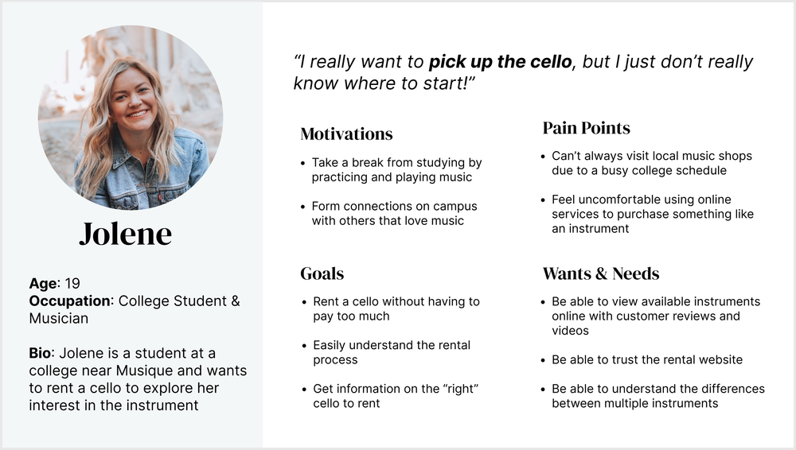
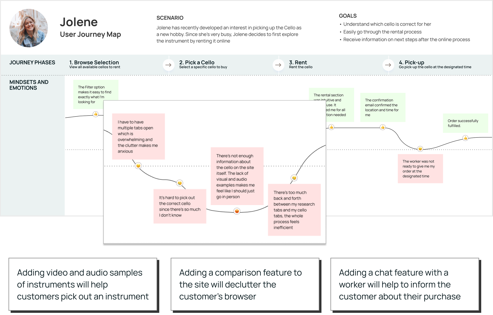
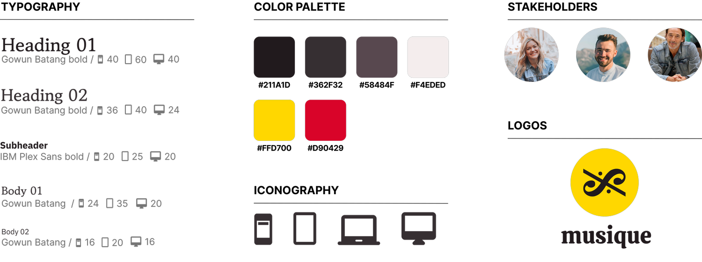

01 / OVERVIEW
I worked as a product designer alongisde a team of 3 other desigers for 5 weeks (2022)
Solve an unmet need in the instrument rental business domain fro three key stakeholders
UX research, UI/UX design, 0-1 designing and concepting, prototyping, user teting, pitching
Personas, user journey maps, user flows, sketches, prototypes, design systems
TL;DR
As a store with a strong customer base among its local musicians, Musique is interested in expanding its reach by establishing an online presence. Aside from creating a more professional and informative website and app compared to its competitors, our team focused on designing cross-device interactions that would streamline the rental process and minimize customer frustrations. Completed as a class project for Interaction Design Studio.
02 / PROBLEM
While there is an audience that is often busy and would benefit from online rental services, the problem we encountered was that when faced with big-money purchases, customers dislike buying them online without first trying the product to acertain that they like it. We were challenged to identify and create features that would overcome this virtual barrier and expand Musique’s customer base through its online store.
“How might we improve a user’s online rental and in-store pick-up experience in order to attract new customers?”
03 / SOLUTION
Musique differentiates itself from other rental sites by offering an elegant UI that caters to adults, countering the misconception that only children are learning musical instruments and that rental instruments are somehow inferior to purchased ones.
Hearing how an instrument sounds before buying it is a crucial aspect of the purchasing process. At Musique, we aim to replicate this experience on our platform by providing audio and video samples.
Easily compare prices, models, sizes, quality, and reviews with Musique's side-by-side comparison feature. Tailor the process to your needs by hand-picking different instrument models or select from Musique’s frequently-compared options.
04 / RESEARCH
Given a tight turnaround time of just one day, our team prioritized user interviews with music students in our immediate vicinity. We specifically targeted students who were picking up a new instrument, which is when customers would typically decide to rent rather than buy. Additionally, we conducted unobtrusive research on service providers and business owners through online communities like Reddit, Quora, and music forums.
Want to find the best instrument for themselves
Key considerations when purchasing an instrument is how the instrument feels and sounds
Want to give accurate information to the customers
When the store gets busy, service providers struggle with keeping information up to date. However, faulty information can cause a chain of costly mistakes
Experience trouble finding insights from their data
It’s hard to differentiate virtual and physical store data, making it hard to find the root cause of problems
To better understand the competitive landscape, our team analyzed the websites of other music rental stores. During our analysis, we identified a range of issues across all sites, with the most significant concern being the lack of instrument information available to customers for purchase. Most sites simply offered an image of the instrument along with its name. Additionally, we found that the majority of rental sites were geared toward children who are just starting to learn an instrument.
four major competitors and their features
05 / ANALYSIS
To better understand our stakeholders, we synthesized our research findings into personas. During this process, we recognized that trying to cater to all stakeholders on one site would result in a shallow product. Consequently, we focused our efforts primarily on our customers and their unique opportunity areas, which also aligned with Musique's objectives.
Meet Jolene, our customer persona
To further understand the interactions between our stakeholders, I created a user journey map of how Jolene might rent a cello from a generic rental site, modeled after one of our competitors.
An abbreviated view of our customer’s user journey map with the three opportunity areas of journey phase 2
06 / DESIGN
To validate our feature ideas, we brainstormed 20 scenarios and then selected the most promising five to develop into storyboards and sketches. We then presented these concepts to our peers for critique.
problem: customers associate the rental process with chaos due to all of the tabs they have open trying to understand the difference between different instrument models
problem: service providers struggle with maintaining up-to-date information between in-person and virtual store activities. Rushing back and forth between customers and the computer is inefficient.
problem: customers still struggle with making big financial decisions online. They also find many rental processes to be a hassle as they are tedious and long.
From our critique sessions, we received positive feedback on giving the instrument view a bit of sophistication, drama, and striking visual interest. This evoked imageries of symphonies and concerts, which suited the content of the application. To that end, our visual style emphasized dark, dramatic, and striking photos of instruments, paired with a dark, velvety color scheme.
07 / REFLECTION
Don’t lose focus on the user flow
My team struggled with scope creep due to wanting to fit every need into the product. We had to retroactively create a user flow in order to regroup. For future projects, I plan to ensure there is a common understanding of the user flow before moving on to the prototyping stage.
Appreciate the beauty of simplicity
It’s easy to fall into the trap of adding too much information to the page so that “at least something will be right.” However, this results in unnecessary clutter. It’s important to have a command of concise language and design in order to exhibit confidence and clarity to the user.
Consistency goes a long way
Establishing a style guide early on is useful for keeping the visual fidelity relatively high. Inconsistent design can often get in the way of constructive critique. For next steps, I would love to refine the visual design more.
08 / OTHERS